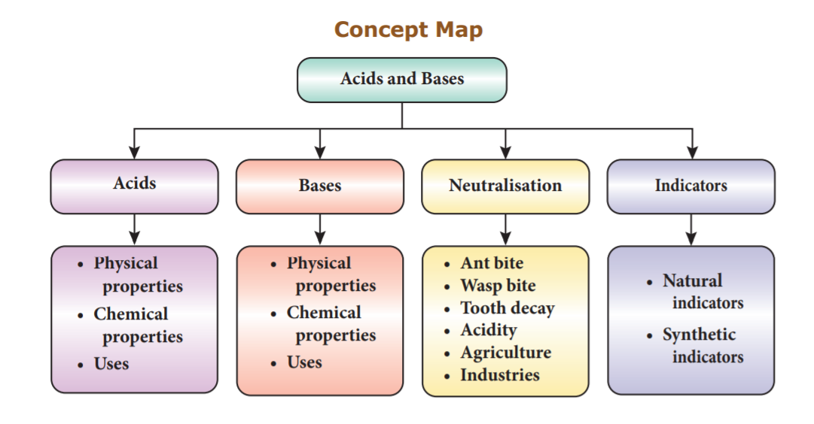

1. Acids are dash in taste.
a) sour
b) sweet
c) bitter
d) salty
2. Aqueous solutions of dash conduct electricity.
a) acid
b) base
c) salt
d) All of these
3. In acidic solutions blue litmus changes into dash colour.
a) blue
b) green
c) red
d) white
4. Base is a substance that gives dash on dissolving in water.
a) O H minus
b) H plus
c) O H
d) H
5. Sodium hydroxide is a dash
a) acid
b) base
c) oxide
d) alkali
6. Red ant sting contains dash
a) acetic acid
b) sulphuric acid
c) oxalic acid
d) formic acid
7. Magnesium hydroxides are used for treating dash
a) acidity
b) head pain
c) teeth decay
d) None of these
8. Acid mixed with base forms dash
a) salt and water
b) salt
c) water
d) No reaction
9. We brush our teeth with tooth paste because it is dash in nature.
a) basic
b) acidic
c) Both a and b
d) None of these
10. In basic solution turmeric indicator paper changes from yellow to dash
a) blue
b) green
c) yellow
d) red
1. Benzoic acids are used for dash
2. The word sour refers to dash in Latin.
3. Bases are dash in taste.
4. Chemical formula of calcium oxide is dash
5. Wasp sting contains dash
6. Turmeric is used as a dash
7. In acidic solution the colour of the hibiscus indicator paper will change to dash
1. Most of the acids are not soluble in water.
2. Acids are bitter in taste.
3. Bases are soapy to touch when they are dry.
4. Acids are corrosive in nature.
5. All bases are alkalis.
6. Hibiscus flower is an example for natural indicator.
1. Acid - Define.
2. Write any four physical properties of acids.
3. What are the similarities between acids and bases?
4. State the difference between acids and bases.
5. What is an indicator?
6. What is a neutralization reaction?
7. Write any four physical properties of base.
1. What are the uses of acids?
2. What are the uses of bases?
3. Explain the neutralization reactions in our daily life.
4. How will you prepare natural indicator from turmeric powder.
1. Vinu and Priyan take their lunch at school. Vinu eats lemon rice and Priyan eats curd rice. Both lemon rice and curd rice are sour in taste. What is the reason?
2. Heshna and Keerthi are friends. Keerthi’steeth are white without caries, but Heshna has teeth with caries. Why? How is it formed?
1. Petrucci, Palph Het.al. General Chemistry: Principles & Modern Applications (9th Edition). Upper Saddle River, NJ: Person Prentice Hall, 2007. Prinit.
2. P.L.Soni, Text book of Inorganic chemistry, S.Chand publication, New Delhi.
3. Complete Chemistry (IGCSE), Oxford university press, New York.
4. Raymond Chang. (2010). Chemistry, New York, NY: The Tata McGraw Hill Companies. Inc.
5. Frank New Certificate Chemistry. McMillan Publishers.
1. https://www.chem4kids.com
2. https:// www.khanacademy.org/science/ chemistry/acids-and-bases-topic
3. https:// www.khanacademy.org/science/ chemistry/neutralization
4. https://courses.chemistry/chapter/acidsand-bases
